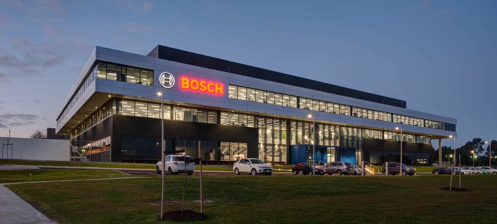

Bosch’s XC division has focused on delivering software-defined vehicles with state of the art compute platforms and zonal ECU architectures. These systems integrate multiple electronic control units into large scale central vehicle computers which control data flow, power distribution, and safety critical communication across vehicle domains. Bosch’s compute solutions provide such services ranging from over-the-air updates to real time sensor fusion and coordination between powertrain, motion, and ADAS subsystems. This is how the XC team contributes to the global effort, by designing and validating leading edge ECUs and gateways, helping switch modern vehicles away from hardware-centric designs toward scalable, software driven architectures that underlie the whole digital backbone of mobility at the Clayton RBAU campus.

During my time at Bosch, I had the opportunity to work alongside a team of highly skilled engineers who fundamentally reshaped how I understand the complete lifecycle of hardware design and development. Due to confidentiality agreements, I cannot discuss the specific projects or products I was involved with however, I can speak to the broader themes and technical skills I developed through the experience. The role demanded a deep appreciation of how electrical, thermal, and mechanical systems interact, and taught me how to approach engineering challenges with rigour, traceability, and intent. It was a steep learning curve, but one that grounded me in the discipline required to take a circuit from concept through to production ready hardware.
I became deeply involved in design validation and verification workflows, learning how to characterise components and subsystems under a range of electrical and environmental stresses. I gained hands on experience with laboratory instrumentation including oscilloscopes, spectrum and network analysers, and precision measurement systems to evaluate performance parameters such as timing integrity, power efficiency, and leakage behaviour. I learned to interpret and correlate experimental data with theoretical models, and to diagnose the root causes of design or manufacturing deviations. Much of this work reinforced how seemingly small design decisions component selection, routing geometry, or ground plane partitioning can have measurable effects on EMC performance, thermal stability, and overall system reliability.
The experience also broadened my understanding of what it means to think as a systems engineer. Each circuit, connector, and firmware layer existed within a tightly coupled architecture that had to satisfy demanding requirements for performance, safety, and manufacturability. Working within such a structured environment taught me the importance of traceability, documentation, and collaborative design reviews how disciplined processes support innovation rather than constrain it. I learned how to bridge theory with practice, communicate design intent effectively across disciplines, and maintain engineering precision under the pressures of real world testing and validation. Bosch gave me not only exposure to advanced technical work in power, RF, and embedded hardware, but also a deep respect for the methodical, systems oriented mindset that defines professional engineering.